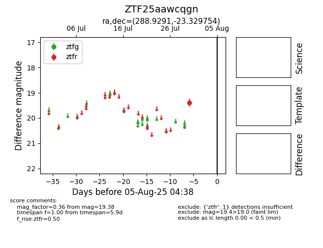

Target ZTF25aawcqgn at 2025-08-05 04:38, see:
FINK: fink-portal.org/ZTF25aawcqgn
Lasair: lasair-ztf.lsst.ac.uk/objects/ZTF25aawcqgn
ALeRCE: alerce.online/object/ZTF25aawcqgn
alt names
ZTF25aawcqgn (ztf,fink)
coordinates:
equatorial (ra, dec) = (288.9291,-23.32975)
galactic (l, b) = (14.2816,-15.48522)
photometry
last ztfr=19.38
1 ztfr detections
